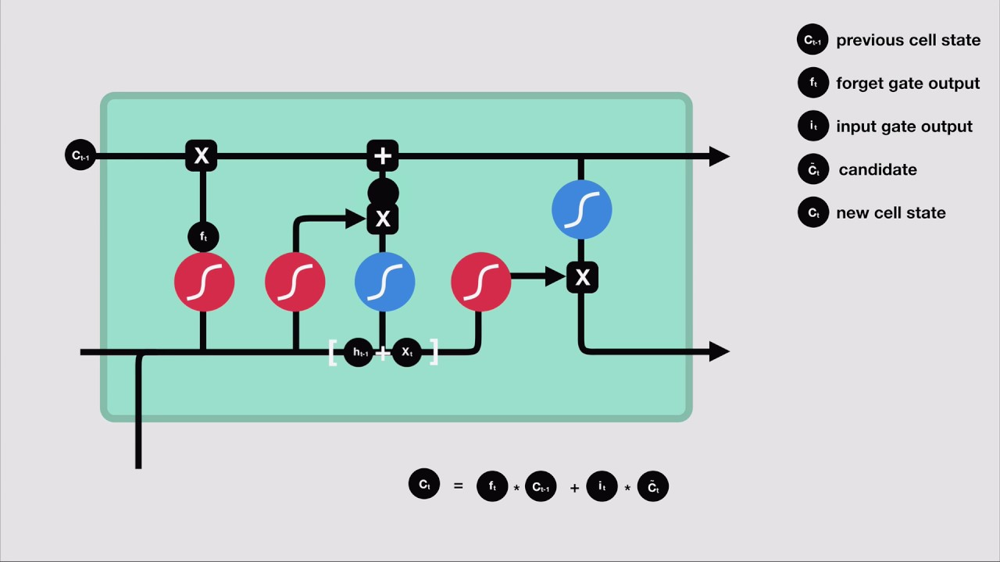

3 - LSTM Network¶
Adapted from this tutorial -> https://www.machinecurve.com/index.php/2019/07/27/how-to-create-a-basic-mlp-classifier-with-the-keras-sequential-api/
github.com/samph4
~
Preface¶
By the end of this notebook you (hopefully) should have been able to make a neural network that you get to play around with. It will use a popular dataset known as the MNIST handwritten digits http://yann.lecun.com/exdb/mnist/ which is essentially a massive database containing 60,000 images of handwritten numeric digits from 0-9. We are going to create and train a classification network that will allow you to input a handwritten digit and the trained model should be able to predict or ‘classify’ what digit it is that you input to the network.
It should be noted at this point that there are many different kinds of neural networks that have been designed to deal with a whole range of applications amidst different problem spaces from natural language processing to self driving cars etc etc. But we’ll start with what is often considered the most simple of neural networks known as the Multi-layer percepron network - a diagram of which is shown below!

These networks are excellent at making a prediction (or number of predictions), based on a number of inputs. Simply put, the MLP is a layered network where each layer consists of a number of nodes. These nodes are often referred to as Perceptrons (hence multi-layer perceptron) and they can be thought of as a place where computation occurs (see left image). These nodes take a series of inputs and convert them into a single output. Each node has two important parameters to consider known as a ‘weight’ and a ‘bias’. A weight is something that is specific to each input that enters the node: a numeric input enters the node and is multiplied by its associated numeric weight. The sum of all of the inputs multiplied by their associated weights is summed at the node. At this point, a ‘bias’ is another quantity that is added to the node to modify its output. That output then passes through an activation function (we’ll get to this later) and then depending on how the network is arranged that output will enter a different node in a different layer as an input! During training, the values of these weights and biases are optimised such that their outputs begin to match more closely with the task you are trying to perform. During training, if the output from your network is drastically different to the value you want it to be (the target value), then you can expect the weights and biases to be optimised more rigorously than they would be if there was no difference between its output and its target value - but again I’ll talk more about this later.
On the right hand side of the figure, you can see that a MLP network is typically split into three key sections:
The input layer
The hidden layer
The output layer
The input layer, as you’d expect, is where the data is input to the network. Let’s say for example we wanted to develop a network to predict somebodies mass based on their height, daily calorific intake and gender. Then a 3-element vector input to the network might look something like [180, 2500, 0] this (where 0 = male, 1 = female). The hidden layer is everything in between and os often reffered to as the ‘black box’ as it is less clear as to what the output from the nodes within this layer mean. They are the intermediary layers that the MLP uses on the way to predicting the actual output. Finally the output layer is simply the output, and the number of nodes typically corresponds to the number of outputs (or predictions) the MLP model is making. So for our example given an input of [180, 2500, 0]; we might expect a trained model to return an output (prediction) of [80] to represent 80kg.
from numpy import array
from keras.models import Sequential
from keras.layers import LSTM
from keras.layers import Dense
# split a univariate sequence into samples
def split_sequence(sequence, n_steps):
X, y = list(), list()
for i in range(len(sequence)):
# find the end of this pattern
end_ix = i + n_steps
# check if we are beyond the sequence
if end_ix > len(sequence)-1:
break
# gather input and output parts of the pattern
seq_x, seq_y = sequence[i:end_ix], sequence[end_ix]
X.append(seq_x)
y.append(seq_y)
return array(X), array(y)
# define input sequence
raw_seq = [10, 20, 30, 40, 50, 60, 70, 80, 90]
# choose a number of time steps
n_steps = 6
# split into samples
X, y = split_sequence(raw_seq, n_steps)
# reshape from [samples, timesteps] into [samples, timesteps, features]
n_features = 1
X = X.reshape((X.shape[0], X.shape[1], n_features))
# define model
model = Sequential()
model.add(LSTM(50, activation='relu', input_shape=(n_steps, n_features)))
model.add(Dense(1))
model.compile(optimizer='adam', loss='mse')
# fit model
model.fit(X, y, epochs=200, verbose=0)
# demonstrate prediction
x_input = array([40, 50 ,60, 70, 80, 90])
x_input = x_input.reshape((1, len(x_input), n_features))
yhat = model.predict(x_input, verbose=0)
print(yhat)
Using TensorFlow backend.
---------------------------------------------------------------------------
InternalError Traceback (most recent call last)
<ipython-input-1-61103b65a025> in <module>
34 model.compile(optimizer='adam', loss='mse')
35 # fit model
---> 36 model.fit(X, y, epochs=200, verbose=0)
37 # demonstrate prediction
38 x_input = array([40, 50 ,60, 70, 80, 90])
~\miniconda3\envs\tensorflow\lib\site-packages\keras\engine\training.py in fit(self, x, y, batch_size, epochs, verbose, callbacks, validation_split, validation_data, shuffle, class_weight, sample_weight, initial_epoch, steps_per_epoch, validation_steps, validation_freq, max_queue_size, workers, use_multiprocessing, **kwargs)
1237 steps_per_epoch=steps_per_epoch,
1238 validation_steps=validation_steps,
-> 1239 validation_freq=validation_freq)
1240
1241 def evaluate(self,
~\miniconda3\envs\tensorflow\lib\site-packages\keras\engine\training_arrays.py in fit_loop(model, fit_function, fit_inputs, out_labels, batch_size, epochs, verbose, callbacks, val_function, val_inputs, shuffle, initial_epoch, steps_per_epoch, validation_steps, validation_freq)
194 ins_batch[i] = ins_batch[i].toarray()
195
--> 196 outs = fit_function(ins_batch)
197 outs = to_list(outs)
198 for l, o in zip(out_labels, outs):
~\miniconda3\envs\tensorflow\lib\site-packages\tensorflow_core\python\keras\backend.py in __call__(self, inputs)
3725 value = math_ops.cast(value, tensor.dtype)
3726 converted_inputs.append(value)
-> 3727 outputs = self._graph_fn(*converted_inputs)
3728
3729 # EagerTensor.numpy() will often make a copy to ensure memory safety.
~\miniconda3\envs\tensorflow\lib\site-packages\tensorflow_core\python\eager\function.py in __call__(self, *args, **kwargs)
1549 TypeError: For invalid positional/keyword argument combinations.
1550 """
-> 1551 return self._call_impl(args, kwargs)
1552
1553 def _call_impl(self, args, kwargs, cancellation_manager=None):
~\miniconda3\envs\tensorflow\lib\site-packages\tensorflow_core\python\eager\function.py in _call_impl(self, args, kwargs, cancellation_manager)
1589 raise TypeError("Keyword arguments {} unknown. Expected {}.".format(
1590 list(kwargs.keys()), list(self._arg_keywords)))
-> 1591 return self._call_flat(args, self.captured_inputs, cancellation_manager)
1592
1593 def _filtered_call(self, args, kwargs):
~\miniconda3\envs\tensorflow\lib\site-packages\tensorflow_core\python\eager\function.py in _call_flat(self, args, captured_inputs, cancellation_manager)
1690 # No tape is watching; skip to running the function.
1691 return self._build_call_outputs(self._inference_function.call(
-> 1692 ctx, args, cancellation_manager=cancellation_manager))
1693 forward_backward = self._select_forward_and_backward_functions(
1694 args,
~\miniconda3\envs\tensorflow\lib\site-packages\tensorflow_core\python\eager\function.py in call(self, ctx, args, cancellation_manager)
543 inputs=args,
544 attrs=("executor_type", executor_type, "config_proto", config),
--> 545 ctx=ctx)
546 else:
547 outputs = execute.execute_with_cancellation(
~\miniconda3\envs\tensorflow\lib\site-packages\tensorflow_core\python\eager\execute.py in quick_execute(op_name, num_outputs, inputs, attrs, ctx, name)
65 else:
66 message = e.message
---> 67 six.raise_from(core._status_to_exception(e.code, message), None)
68 except TypeError as e:
69 keras_symbolic_tensors = [
~\miniconda3\envs\tensorflow\lib\site-packages\six.py in raise_from(value, from_value)
InternalError: Blas GEMM launch failed : a.shape=(3, 50), b.shape=(50, 200), m=3, n=200, k=50
[[{{node lstm_1/while/body/_1/MatMul_1}}]] [Op:__inference_keras_scratch_graph_1472]
Function call stack:
keras_scratch_graph